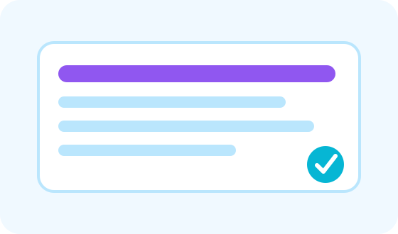

پرومپٹ لکھنے کی بنیادی سمجھ
اچھے prompt کا آسان formula: کام، پس منظر، لہجہ، شکل، مثال اور حد۔

Prompt کیا ہوتا ہے؟
Prompt وہ ہدایت یا سوال ہے جو آپ اے آئی کو دیتے ہیں۔ جیسے آپ کسی انسان کو کام سمجھاتے ہیں، ویسے ہی اے آئی کو بھی کام سمجھایا جاتا ہے۔ فرق یہ ہے کہ اے آئی اندازہ لگا سکتی ہے، مگر آپ کی نیت نہیں پڑھ سکتی۔ اس لیے prompt جتنا واضح ہوگا، جواب اتنا بہتر ہوگا۔
آسان Prompt Formula
ایک مضبوط prompt میں چھ حصے شامل کیے جا سکتے ہیں: کام کیا ہے؟ کس کے لیے ہے؟ پس منظر کیا ہے؟ زبان اور لہجہ کیا ہو؟ جواب کس format میں چاہیے؟ کن چیزوں سے بچنا ہے؟
اچھا prompt ایک چھوٹا brief ہوتا ہے۔
Prompting کا مقصد AI کو سوچنے کا راستہ دینا ہے، صرف سوال پھینکنا نہیں۔
مثال
کمزور prompt: “AI پر کچھ لکھو”۔ بہتر prompt: “عام لوگوں کے لیے اردو میں 300 الفاظ کا آسان مضمون لکھیں جس میں بتایا جائے کہ AI روزمرہ زندگی میں کیسے استعمال ہوتی ہے۔ لہجہ دوستانہ ہو اور آخر میں 3 اہم نکات دیں۔”
Prompt کو بہتر بنانے کا طریقہ
پہلا جواب آخری نہیں ہوتا۔ آپ follow-up دے سکتے ہیں: “مزید آسان کریں”، “مثالیں شامل کریں”، “زیادہ مختصر کریں”، “professional tone رکھیں”، “table بنا دیں”، یا “beginner audience کے لیے لکھیں”۔
Prompt Templates
روزمرہ کاموں کے لیے templates محفوظ رکھیں۔ جیسے: “آپ ایک [کردار] ہیں۔ مجھے [کام] چاہیے۔ سامعین [audience] ہیں۔ زبان [زبان] ہو۔ جواب [format] میں دیں۔ ان الفاظ سے بچیں: [list]۔”
عملی چیک لسٹ
- کام شروع کرنے سے پہلے مقصد صاف لکھیں۔
- AI کو audience، زبان اور مطلوبہ format بتائیں۔
- جواب کو اپنے حالات کے مطابق edit کریں۔
- اہم معلومات، تاریخیں، قیمتیں اور facts ضرور verify کریں۔
- ذاتی، مالی یا حساس معلومات share کرنے سے بچیں۔
Quick Quiz
نیچے دیے گئے سوالات حل کریں تاکہ آپ اپنی سمجھ چیک کر سکیں۔